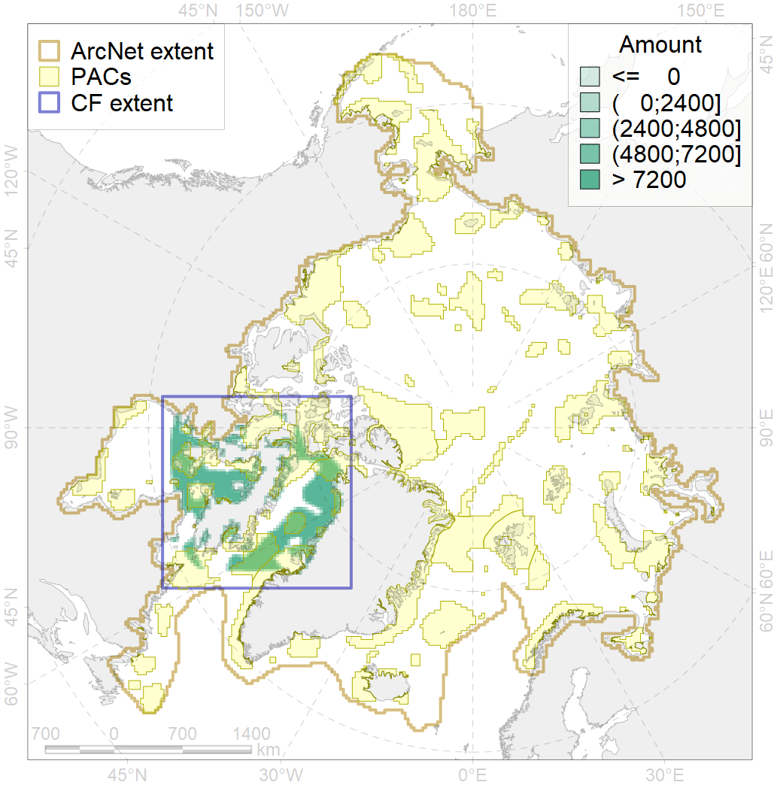
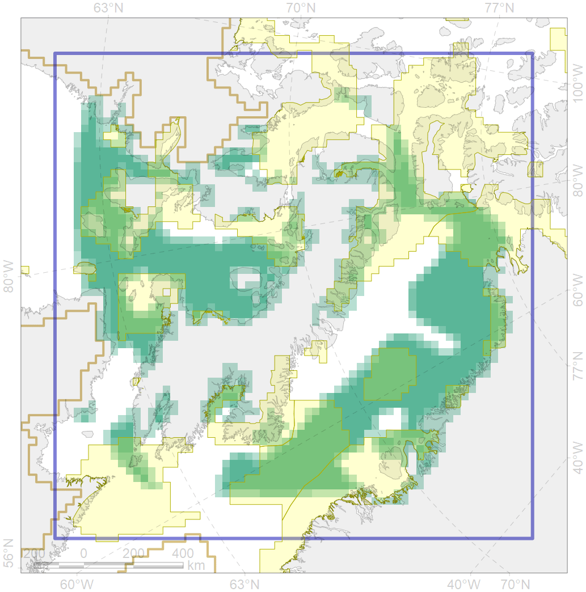

5103

| CF ID | 5103 |
| CF Name | Bowhead whale Baffin population spring-autumn distribution |
| Time Period | 2002-2010 |
| Source(s) | Ferguson et al 2010; Nielsen et al 2015; Boertmann and Mosbech 2017 |
| Seasonality | May-December |
| Depth Horizon | 0-250 |
| Methodology | Satellite tagging |
| Author Name | Filatova |
| Notes | |
| Conservation Target Set in the Scenario | 0.24 |
| Conservation Target Achieved in the Scenario | 0.438 (Scenario: 182.7%) |
| PAC ID | Proportion in the PAC | Contribution to ArcNet Target Achievement | PAC’s Contribution to the Achieved Target |
|---|---|---|---|
| 44 | 4.6% | 17.1% | 9.4% |
| 45 | 9.7% | 38.2% | 20.9% |
| 46 | 1.2% | 4.6% | 2.5% |
| 47 | 4.3% | 16.7% | 9.1% |
| 48 | 0.5% | 1.4% | 0.8% |
| 49 | 1.6% | 5.5% | 3.0% |
| 51 | 4.5% | 18.7% | 10.3% |
| 52 | 6.1% | 25.0% | 13.7% |
| 65 | 0.2% | 0.8% | 0.5% |
| 66 | 1.3% | 4.5% | 2.4% |
| 67 | 4.7% | 17.0% | 9.3% |
| 68 | 0.1% | 0.3% | 0.1% |
| 72 | 0.4% | 0.6% | 0.3% |
| 73 | 2.8% | 9.8% | 5.4% |
| 74 | 0.2% | 0.8% | 0.4% |
| 76 | 1.4% | 5.5% | 3.0% |
| inner | 43.6% | 166.5% | 91.1% |
| outer | 56.4% | 16.2% | 8.9% |